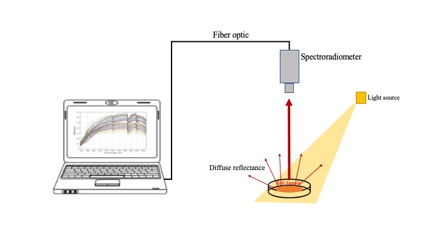
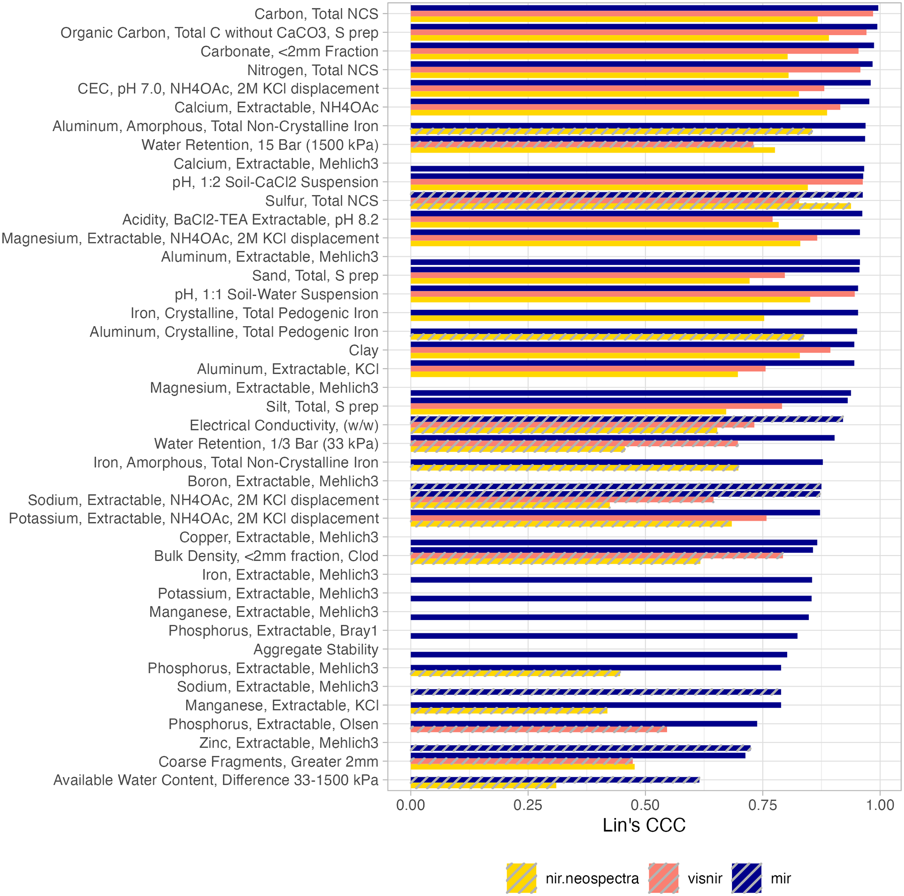

1 Soil spectroscopy
1.1 What is soil spectroscopy
Soil spectroscopy refers to the measurement of light interaction with soil. Various methods exist to measure this interaction with the goal of understanding the mineral and organic composition of soils. The most common technique is to measure the absorption when a non-collimated flux of light from the visible and infrared region of the electromagnetic spectrum is applied to a soil surface. The proportion of the incident radiation reflected by the soil compared to a reference material is measured, forming the basis of diffuse reflectance spectroscopy. Distinct characteristic spectra can then be used to estimate various soil properties, including particle size distribution, minerals, and organic compounds. The OSSL is composed of diffuse reflectance spectra collected across the visible (Vis), near- (NIR), and mid-infrared (MIR) regions.
Visible and near-infrared (VisNIR) is typically represented between 350–2500 nm, while the mid-infrared (MIR) ranges between 2500–25000 nm (formally described as 4000–400 cm-1). In the OSSL, we have also imported a specific near-infrared library built with the Neospectra scanner (Si-Ware), with its range covering the 1350-2550 nm region.

With a collection of soil spectra and corresponding soil properties measured by conventional methods, one can fit predictive models to quantitatively estimate various soil properties on new scanned soil samples. This method is cost-effective, faster, does not produce chemical residues, and is more scalable than traditional soil analysis techniques. A soil spectral library, such as the OSSL, provides the training data for building and testing predictive models, which are typically developed using machine learning or chemometric algorithms. The effectiveness of these predictive models depends significantly on how well the library represents the variability and diversity of both current and new soil samples intended for prediction.
1.2 Estimating soil properties
Given that each soil spectral library that was imported into the OSSL used distinct procedures for analytically determining reference values, the incompatibility has been a subject of internal discussion in this project. Some global initiatives have been facing this same issue in their soil databases but there still no clear or full consensus on how to harmonize those different methods. This has been a topic of great discussion and research development at the Global Soil Partnership’s Global Soil Laboratory Network (GLOSOLAN).
In order to maximize transparency, for now, we have decided to produce two different levels for the OSSL database. Level 0 takes into account the original methods employed in each dataset but tries to initially fit them to two reference lists: KSSL Guidance – Laboratory Methods and Manuals and ISO standards. A copy of the KSSL procedures and coding scheme is archived in ossl-imports.
If a reference method does not fall in any previous method, then we create a new variable sharing at least a common property and unit. A final harmonization takes place in the OSSL Level 1, where those common properties sharing different methods are converted to a target method using some publicly available transformation rule, or in the worst scenario, they are naively binded or kept separated to produce its specific model. All the implementations are documented in the ossl-import/ossl_level0_to_level1_soillab_harmonization.csv repository.
In addition, GLOSOLAN’s Standard Operating Procedures (SOPs) list four groups of soil variables of interest to international soil spectroscopy projects:
Soil chemical variables:
- pH,
- Carbon,
- Phosphorous,
- Potassium,
- Nitrogen,
- Exchangeable cations and CEC,
- Extractable microelements,
- Trace and major element analyses,
- Gypsum,
- Electrical conductivity and total soluble salt content,
- Soluble sulfate and chloride analysis,
- Special analysis for peats, mineral and organic soils, agriculture and forest.
Soil physical variables:
- Bulk density,
- Coarse fragments,
- Particle-size distribution,
- Water retention curve,
- Porosity,
- Hydraulic conductivity function,
- Aggregate stability,
- Moisture content,
Soil biological variables:
- Microbial biomass,
- Soil Respiration,
- Enzyme activity,
- Microbial identification,
Soil contaminants:
- Heavy metal elements: As, Hg, Cu, Cd, Pb and similar,
- Other soil pollutants,
1.3 Predictive modeling
From initial findings with the OSSL [1], on average, the MIR range appears to be the best spectral region for developing spectral prediction models, followed by VisNIR and NIR (Neospectra). This happens because the MIR contains several fundamental and resolved absorption features from mineral and organic functional groups that translate to better prediction capacity, despite challenges in the interpretation that stem from chemical heterogeneity. VisNIR and NIR spectra, in turn, are made of overtones from the fundamental vibrations of the MIR range, hence, are less sensitive to soil constituents and may result in inferior performance. In addition, we found good performance for some soil properties that may not directly affect soil spectra but can be indirectly inferred and quantified (secondary properties), such as cation exchange capacity, pH, soil contaminants, etc. However, understanding both primary and secondary components in the soil helps to better understand the factors that contribute to the improvement of spectral predictive models within the complex context of soil systems and also to select the spectral range, where they are most pronounced.

We recommend visiting a dedicated tutorial where we present and walk through the modeling framework employed with the OSSL. We recommend checking the introduction section to understand why soil spectroscopy is a fit-for-purpose technology, why good predictions flow only from good data, and the best practices for model calibration.
The OSSL paper [1] also describes and validates in detail the OSSL models.
1.4 Soil spectral libraries
Several soil spectral libraries were minimally standardized/harmonized to be imported into the OSSL. The following list represents the current integrated datasets, but several more are planned to be added in the near future:
1.4.1 KSSL.SSL
MIR and VisNIR spectral library and associated soil characterization data, mostly representing soils from the United States and its territories.
- 📕 Seybold, C. A., Ferguson, R., Wysocki, D., Bailey, S., Anderson, J., Nester, B., … & Thomas, P. (2019). Application of Mid‐Infrared Spectroscopy in Soil Survey. Soil Science Society of America Journal, 83(6), 1746-1759. https://doi.org/10.2136/sssaj2019.06.0205.
- 🔗 Project website: https://ncsslabdatamart.sc.egov.usda.gov/
- ©️ Data license: CC-BY
- 📍 Unique sites: 9,061
- 📋 Unique complete measurements: 76,813 (MIR) and 19,807 (VisNIR)
- 📝 Harmonization and import steps: ossl-imports/dataset/KSSL
1.4.2 ICRAF.ISRIC
A Globally Distributed Soil Spectral Library. VisNIR and MIR measurements for some 785 profiles from the ISRIC World Soil Reference Collection. The samples are from 58 countries spanning Africa, Asia, Europe, North America, and South America.
- 📕 World Agroforestry Centre (ICRAF) and ISRIC - World Soil Information. 2010. The ICRAF/ISRIC Soil VisNIR and MIR spectral libraries. Nairobi, Kenya: World Agroforestry Centre (ICRAF).
- 🔗 Project websites: ISRIC Data Hub, ICRAF Dataverse.
- ©️ Data license: CC-BY
- 📍 Unique locations: 785
- 📋 Unique complete measurements: 4308
- 📝 Harmonization and import steps: ossl-imports/dataset/ICRAF_ISRIC
1.4.3 LUCAS.SSL
Soil samples from the LUCAS (Land Use/Cover Area frame statistical Survey) of 23-28 European Union member states collected in 2009 and 2015 were scanned for VisNIR. Data is available through the OSSL with permission and under condition that “Graphical representation of individual units on a map is permitted as far as the geographical location of the soil samples is not detectable”. Additional 600 samples from the LUCAS soil samples archive were scanned at Woodwell Climate Research using an MIR instrument.
- 📕 Orgiazzi, A., Ballabio, C., Panagos, P., Jones, A., & Fernández-Ugalde, O. (2018). LUCAS Soil, the largest expandable soil dataset for Europe: a review. European Journal of Soil Science, 69(1), 140–153. doi:10.1111/ejss.12499.
- 🔗 Project website: LUCAS 2009, LUCAS 2015.
- ©️ Data license: JRC License Agreement for LUCAS 2009 and LUCAS 2015 under Notification section.
- 📍 Unique locations: 41,719
- 📋 Unique complete measurements: 41,719
- 📝 Harmonization and import steps: ossl-imports/dataset/LUCAS
The LUCAS topsoil dataset used in this work was made available by the European Commission through the European Soil Data Centre managed by the Joint Research Centre (JRC), http://esdac.jrc.ec.europa.eu/.
1.4.4 AFSIS1.SSL
Africa Soil Information Service (AfSIS) Soil Chemistry Phase I consists of MIR and VisNIR measurements of 1903 georeferenced soil samples collected from 19 countries in Sub-Saharan Africa including a suite of wet chemistry data.
- 📕 Vågen, T.-G., Winowiecki, L.A., Desta, L., Tondoh, E.J., Weullow, E., Shepherd, K., Sila, A., (2020). Mid-Infrared Spectra (MIRS) from ICRAF Soil and Plant Spectroscopy Laboratory: Africa Soil Information Service (AfSIS) Phase I 2009-2013. World Agroforestry (ICRAF), V1, https://doi.org/10.34725/DVN/QXCWP1.
- 🔗 Project website: AfSIS, AWS Open Registry, ICRAF Dataverse.
- ©️ Data license: Open Database License (“ODbL”)
- 📍 Unique locations: 1903
- 📋 Unique complete measurements: 3806
- 📝 Harmonization and import steps: ossl-imports/dataset/AFSIS
1.4.5 AFSIS2.SSL
Africa Soil Information Service (AfSIS) Soil Chemistry Phase II. Three datasets for Tanzania, Ghana, and Nigeria. Data has been analyzed at the ICRAF Soil-Plant Spectral Diagnostics Laboratory, Nairobi, and the Rothamsted Research. More information can be found on ICRAF Dataverse.
- 📕 Hengl, T., Miller, M.A.E., Križan, J., Shepherd, K.D., Sila, A., Kilibarda, M., Antonijevi, O., Glušica, L., Dobermann, A., Haefele, S.M., McGrath, S.P., Acquah, G.E., Collinson, J., Parente, L., Sheykhmousa, M., Saito, K., Johnson, J-M., Chamberlin, J., Silatsa, F.B.T., Yemefack, M., Wendt, J., MacMillan, R.A., Wheeler I. and Crouch, J. (2021) African soil properties and nutrients mapped at 30 m spatial resolution using two-scale ensemble machine learning. Scientific Reports, 11, 6130. https://www.nature.com/articles/s41598-021-85639-y.
- 🔗 Project website: Tanzania, Ghana, and Nigeria.
- ©️ Data license: CC-BY
- 📍 Unique locations: 367
- 📋 Unique complete measurements: 820
- 📝 Harmonization and import steps: ossl-imports/dataset/AFSIS2
1.4.6 CAF.SSL
The Central African Soil Spectral Library consists of MIR measurements of 1800 soil samples collected in Central Africa.
- 📕 Summerauer, L., Baumann, P., Ramirez-Lopez, L., Barthel, M., Bauters, M., Bukombe, B., Reichenbach, M., Boeckx, P., Kearsley, E., Van Oost, K., Vanlauwe, B., Chiragaga, D., Heri-Kazi, A. B., Moonen, P., Sila, A., Shepherd, K., Bazirake Mujinya, B., Van Ranst, E., Baert, G., Doetterl, S., and Six, J. (2021). The central African soil spectral library: a new soil infrared repository and a geographical prediction analysis. SOIL, 7, 693–715, https://doi.org/10.5194/soil-7-693-2021
- 🔗 Project website: Github
- ©️ Data license: CC-BY
- 📍 Unique locations: ?
- 📋 Unique complete measurements: 1852
- 📝 Harmonization and import steps: ossl-imports/dataset/CASSL
1.4.7 SCHIEDUNG.SSL
Dataset to the manuscript Schiedung et al. (2022). MIR measurements of 284 samples from high-latitude forest soils of Canada.
- 📕 Schiedung, M., Bellè, S.-L., Malhotra, A., & Abiven, S. (2022). Organic carbon stocks, quality and prediction in permafrost-affected forest soils in north Canada. Catena, 213, 106194. https://doi.org/10.1016/j.catena.2022.106194.
- 🔗 Project website: Zenodo
- ©️ Data license: CC-BY
- 📍 Unique locations: 289
- 📋 Unique complete measurements: 259
- 📝 Harmonization and import steps: ossl-imports/dataset/Schiedung
1.4.8 GARRETT.SSL
A soil dataset from the FR380 trial series spanning 35 Pinus radiata forest sites in New Zealand. The dataset underpins three existing publications by Watt et al. (2005; 2008) and Ross et al. (2009) which details sample sites and the time zero (i.e. time of tree planting) sample collection and testing method. The publication by Garret et al. (2022) details the soil mid-infrared spectroscopy method and extension on soil chemistry testing using the same time zero samples. A total of 184 samples have publicly available MIR measurements.
- 📕 Garrett, L. G., Sanderman, J., Palmer, D. J., Dean, F., Patel, S., Bridson, J. H., & Carlin, T. (2022). Mid-infrared spectroscopy for planted forest soil and foliage nutrition predictions, New Zealand case study. In Trees, Forests and People (Vol. 8, p. 100280). https://doi.org/10.1016/j.tfp.2022.100280.
- 🔗 Project website: Figshare
- ©️ Data license: CC-BY
- 📍 Unique locations: 35
- 📋 Unique complete measurements: 184
- 📝 Harmonization and import steps: ossl-imports/dataset/Garrett
1.4.9 SERBIA.SSL
The Serbian SSL is a dataset with 135 samples shared by University of Novi Sad and published in Jović et al. (2019). The soil samples were sampled in 2009. Samples were taken from three different types of soil: arable, meadow, and forest, with 3 different depths: 0-30 cm, 30-60 cm and 60-90 cm for each location (n=45). Classical wet chemistry analyses includes texture, carbon total, carbon organic, carbon inorganic, pH, C/N ratio, and CaCO3. Only texture has complete data for all depths, the other soil properties were determined only for the 0-30 cm layer. The spectra in the MIR range were taken for all depths using a ThermoFisher Nicolet Nexus 670 with a DTGS detector, diffuse reflectance module, and gold as background reference. MIR spectra were obtained in the spectral range of 400-4000 cm-1 in duplicates. The coordinates of the sampling sites are given with lower precision.
- 📕 Jović, B., Ćirićb, V., Kovačevića, M., Šeremešićb, S., Kordića, B. (2019). Empirical equation for preliminary assessment of soil texture. In Spectrochimica Acta Part A: Molecular and Biomolecular Spectroscopy (Vol. 206, p. 506-511). https://doi.org/10.1016/j.saa.2018.08.039.
- 🔗 Project website: Data shared by email. More info in the paper
- ©️ Data license: CC-BY
- 📍 Unique locations: 45
- 📋 Unique complete measurements: 135
- 📝 Harmonization and import steps: ossl-imports/dataset/Serbia
1.5 Instruments
A Global Soil Spectroscopy Assessment was published in 2021 by FAO [2], where a number of instruments were identified in soil spectroscopy laboratories. Within the SS4GG initiative, we published a paper on the spectral dissimilarity of 20 MIR instruments [3] providing clear recommendations to overcome this problem. A second analysis of VisNIR instruments is being developed in collaboration with the IEEE P4005 working group.

1.6 Software
There are many proprietary and open source software used to process spectral measurements. We provide below a list (not exhaustive) of the most common packages/modules that can be used in R or Python (both FOSS) for importing, preprocessing, and analyzing soil spectral data:
1.6.1 SoilSpecData
- 📛 Name: SoilSpecData
- 💼 Specialty: A Python package for handling soil spectroscopy data, with a focus on the Open Soil Spectral Library (OSSL) in Python.
- 💻 Programming language: Python
- 🔗 Homepage: Website, GitHub
- 📕 Albinet, F. SoilSpecData: A Python package for handling soil spectroscopy data, with a focus on the Open Soil Spectral Library (OSSL). Python package. Available in: https://fr.anckalbi.net/soilspecdata/.
- ©️ License: Apache-2.0 license
- 📧 Maintainer: Franck Albinet
1.6.2 SoilSpecTfm
- 📛 Name: SoilSpecTfm
- 💼 Specialty: A Python package for handling soil spectroscopy data, with a focus on the Open Soil Spectral Library (OSSL) in Python.
- 💻 Programming language: Python
- 🔗 Homepage: Website, GitHub
- 📕 Albinet, F. SoilSpecTfm: Provides Scikit-Learn compatible transforms for spectroscopic data preprocessing. Python package. Available in: https://github.com/franckalbinet/soilspectfm.
- ©️ License: Apache-2.0 license
- 📧 Maintainer: Franck Albinet
1.6.3 opusreader2
- 📛 Name: opusreader2
- 💼 Specialty: Read OPUS binary files from Fourier-Transform Infrared (FT-IR) spectrometers of the company Bruker Optics GmbH & Co. in R
- 💻 Programming language: R
- 🔗 Homepage: GitHub
- 📕 Baumann P, Knecht T, Roudier P (2023). opusreader2: Read spectroscopic data from Bruker OPUS binary Files. R package version 0.6.3.
- ©️ License: MIT
- 📧 Maintainer: spectral-cockpit
1.6.4 asdreader
- 📛 Name: asdreader
- 💼 Specialty: Reading ASD binary files in R
- 💻 Programming language: R
- 🔗 Homepage: GitHub
- 📕 Roudier, P. (2020). asdreader: reading ASD binary files in R. R package version 0.1-3 CRAN.
- ©️ License: GPL
- 📧 Maintainer: Pierre Roudier
1.6.5 prospectr
- 📛 Name: prospectr
- 💼 Specialty: Signal processing, resampling
- 💻 Programming language: R
- 🔗 Homepage: GitHub
- 📕 Stevens, A., & Ramirez-Lopez, L. (2022). An introduction to the prospectr package. R Package Vignette. R Package Version 0.2.6.
- ©️ License: MIT + file LICENSE
- 📧 Maintainer: Leornardo Ramirez-Lopez
1.6.6 simplerspec
- 📛 Name: simplerspec
- 💼 Specialty: Soil and plant spectroscopic model building and prediction
- 💻 Programming language: R
- 🔗 Homepage: GitHub
- 📕 Baumann, P. (2020). simplerspec: Soil and plant spectroscopic model building and prediction. Packages R CRAN.
- ©️ License: GNU General Public License v3.0
- 📧 Maintainer: Philipp Baumann
1.6.7 resemble
- 📛 Name: resemble
- 💼 Specialty: Memory-based learning in spectral chemometrics
- 💻 Programming language: R
- 🔗 Homepage: GitHub
- 📕 Ramirez-Lopez, L., and Stevens, A., and Viscarra Rossel, R., and Lobsey, C., and Wadoux, A., and Breure, T. (2022). resemble: Regression and similarity evaluation for memory-based learning in spectral chemometrics. R package Vignette. R package version 2.2.1.
- ©️ License: MIT + file LICENSE
- 📧 Maintainer: Leonardo Ramirez Lopez
1.6.8 mdatools
- 📛 Name: mdatools
- 💼 Specialty: A package for preprocessing, exploring and analysis of multivariate data. The package provides methods mostly common for Chemometrics.
- 💻 Programming language: R
- 🔗 Homepage: Website, GitHub
- 📕 Kucheryavskiy, S. (2020). mdatools – R package for chemometrics. Chemometrics and Intelligent Laboratory Systems: An International Journal Sponsored by the Chemometrics Society, 198(103937), 103937. doi:10.1016/j.chemolab.2020.103937.
- ©️ License: MIT
- 📧 Maintainer: Sergey Kucheryavskiy